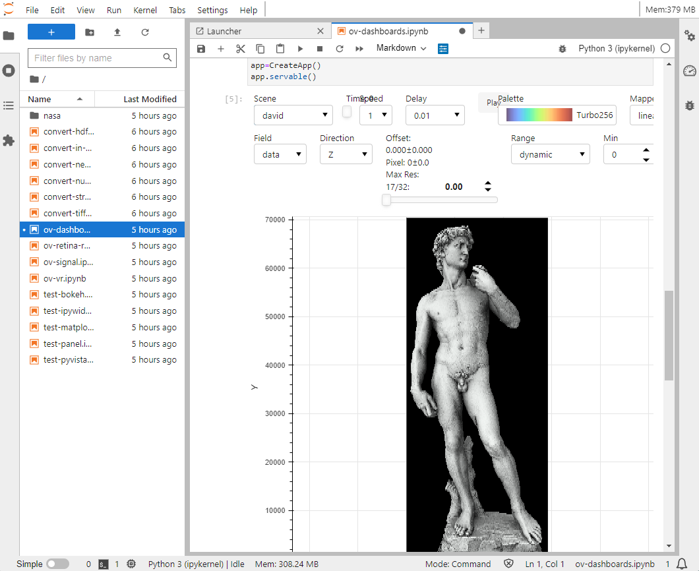

NSDF Jupyter
Work in progress...
This material is based upon work supported by the National Science Foundation under Grant No. 2138811. Any opinions, findings, and conclusions or recommendations expressed in this material are those of the author(s) and do not necessarily reflect the views of the National Science Foundation. Copyright © 2024 National Science Data Fabric